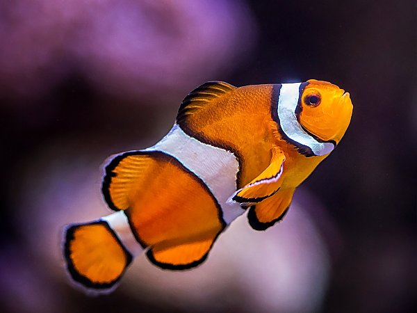
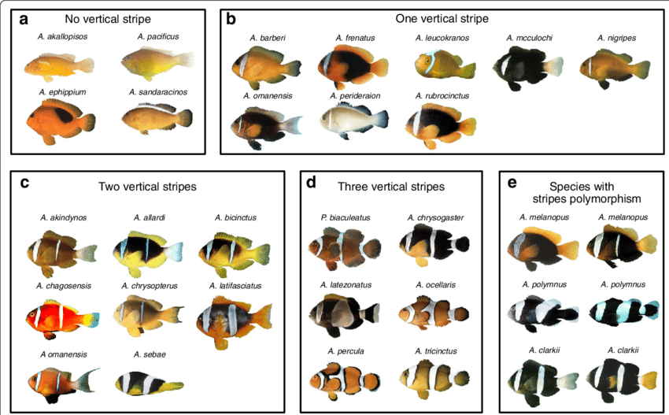
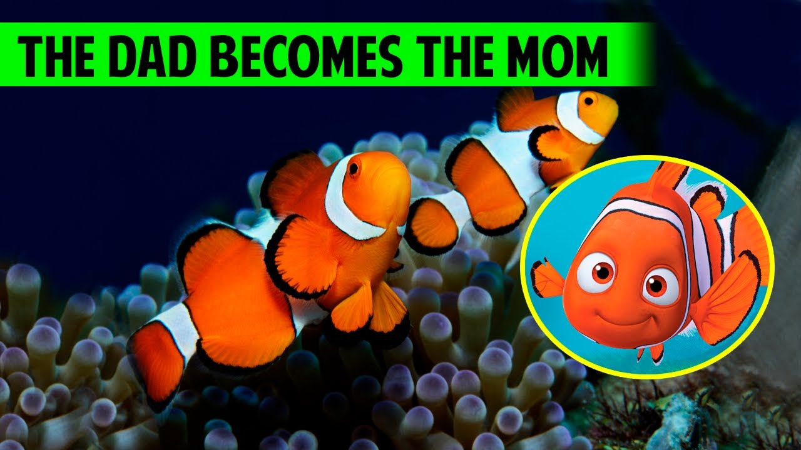

Wish to learn more about clown fish?
We are here to help!
Clown Fish Multimedia Website
Introduction
Fishes from the subfamily Amphiprioninae of the family Pomacentridae are known as clownfish or anemonefish.
There are thirty species of clownfish known; one belongs to the genus Premnas, and the others to the genus Amphiprion.
They all create symbiotic mutualisms with sea anemones in the wild.
Anemonefish vary in overall colour from yellow to orange to reddish or blackish, and many have white bars or patches.
The tiniest only manages 7-8 cm, while the greatest can grow to a length of 17 cm.Fishes from the subfamily Amphiprioninae of the family Pomacentridae are known as clownfish or anemonefish.
There are thirty species of clownfish known; one belongs to the genus Premnas, and the others to the genus Amphiprion.
They all create symbiotic mutualisms with sea anemones in the wild.
Anemonefish vary in overall colour from yellow to orange to reddish or blackish, and many have white bars or patches.
The tiniest only manages 7-8 cm, while the greatest can grow to a length of 17 cm.

Fig.1 - Clownfish.
Natural Habitat
Clownfish can be found in the Red Sea, the Great Barrier Reef, and the Australian coastline as well as in the warm seas of the Indian and Pacific Oceans.
They inhabit protected environments with lots of vegetation and rocky formations, such as coral reefs, lagoons, and shallow coastal areas.
Clownfish are well known for their symbiotic association with sea anemones, which offer protection from predators.
They are frequently discovered living among the tentacles of these organisms.
Clownfish also need access to a variety of food sources, such as plankton, algae, and small invertebrates, as well as clean water with good water quality.
Fig.2 - Clownfish.
Species:
There are 28 recognised varieties of clownfish, all of which are members of the Pomacentridae family's Amphiprioninae subfamily.
The orange clownfish, also known as Amphiprion percula, is the most prevalent and well-known species and was made well-known by the Pixar film "Finding Nemo."
Other varieties of clownfish include, among others, the Clark's anemonefish, the tomato clownfish, the cinnamon clownfish, and the pink skunk clownfish.
Every species has distinctive physical traits, such as coloration and size, and some are restricted to particular geographical areas.
The ability of male clownfish to change their gender and their symbiotic connection with sea anemones are two characteristics that all species of clownfish have in common.

Fig.3 - Clownfish.
Gender switch
Clownfish can change their gender from male to female after birth.
Protandry is the term for what happens when the main female in a group of people passes away or vanishes.
The biggest and most aggressive male fish in the group will change its gender to female and take over as the dominant fish, while the other male fish will climb the social ladder and start reproducing.
The physiological changes that accompany this gender transition, which can take several weeks to months, include the development of female reproductive organs and the suppression of male reproductive organs.

Fig.4 - Clownfish.
Some interesting facts about clownfish
They consume both plants and animals since they are omnivores.
Their main food sources are algae, zooplankton (tiny aquatic creatures), and small crustaceans.
Coral reefs around the coasts of Australia and South Asia are home to clownfish.
Sea anemones and clownfish share a symbiotic relationship, which benefits both species.
The mucus covering on clownfish bodies makes them resistant to the toxins that anemones use to ensnare prey.
The clownfish reciprocates by eradicating parasites and chasing away intruders in exchange for the anemone's protection from predators.
Sadly, despite the movie's message about the harm caused by capturing clownfish, "Finding Nemo's" growing popularity has led to an increase in the number of captive clownfish housed in tanks.
Vid.1: Lifecycle of clown fishVid.2: Short documentry on clownfish
Fun Facts:
Nemo, who stars as the title character in the Pixar film "Finding Nemo," is the most well-known clownfish.
Concerns about the effect on wild populations arose as a result of an increase in demand for clownfish as pets following the film's release.


{kind=link}
{kind=link}
{kind=link}
{kind=link}